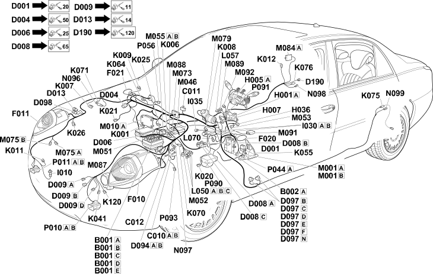

12 front
- Path
- Electrical equipment > Wiring > 12 front
- Kind
- wiring harness
- Applies to
- engines: 3.0 V6; all production periods; only with equipment: Automatic Transmission
- Interactive page
- https://sloeber94.github.io/elrnDB-lThss/en/#/843175
Applies to: engines: 3.0 V6; all production periods; only with equipment: Automatic Transmission

Topics that link to this page (109)
- B001A Junction unit(FRONT)
- B001B Junction unit(FRONT)
- B001C Junction unit(FRONT)
- B001D Engine compartment junction unit(FRONT)
- B001E Junction unit(FRONT)
- B002A Junction unit under dashboard(FRONT)
- C010A Left front earth(FRONT)
- C010B Left front earth(FRONT)
- C011 Right front earth(FRONT)
- C012 ABS front earth(FRONT)
- C040 Earth on engine(FRONT)
- D001 Front/dashboard coupling(FRONT)
- D006 Front/rear coupling(FRONT)
- D008A Air conditioning-heater front coupling(FRONT)
- D008B Air conditioning-heater front coupling(FRONT)
- D008C Air conditioning-heater front coupling(FRONT)
- D009A Front/radiator coupling(FRONT)
- D009B Front/radiator coupling(FRONT)
- D009C Front/radiator coupling(FRONT)
- D009D Front/radiator coupling(FRONT)
- D013 Front/bumper coupling(FRONT)
- D094A Adaptive Cruise Control node bridge coupling(FRONT)
- D094B Adaptive Cruise Control node bridge coupling(FRONT)
- D097A Short circuit coupling(FRONT)
- D097B Short circuit coupling(FRONT)
- D097C Short circuit coupling(FRONT)
- D097D Short circuit coupling(FRONT)
- D097E Short circuit coupling(FRONT)
- D097F Short circuit coupling(FRONT)
- D097G Short circuit coupling(FRONT)
- D098 Front/headlamp washer coupling(FRONT)
- D190 Front/Webasto pump coupling(FRONT)
- F010 Left headlamp(FRONT)
- F011 Right headlamp(FRONT)
- F020 Left side direction indicator(FRONT)
- F021 Right side direction indicator(FRONT)
- H001A Ignition switch(FRONT)
- H005A Steering column switch unit(FRONT)
- H007 Cruise Control control(FRONT)
- H036 Controls on tunnel(FRONT)
- I010 Bonnet release switch(FRONT)
- I020 Reversing lights switch(FRONT)
- I020 Reversing lights switch(FRONT)
- I031 Switch on clutch pedal(FRONT)
- I035 Safety switch on brake pedal for cruise control(FRONT)
- K001 Headlamp alignment corrector front potentiometer (CAF)(FRONT)
- K006 Left front vertical acceleration sensor(FRONT)
- K007 Right front vertical acceleration sensor(FRONT)
- K008 Vertical acceleration sensor on left front wheel(FRONT)
- K009 Vertical acceleration sensor on left front wheel(FRONT)
- K011 Lateral acceleration sensor(FRONT)
- K012 Rear vertical acceleration sensor (bodyshell)(FRONT)
- K020 Left brake pad wear sensor (switch)(FRONT)
- K021 Right brake pad wear sensor (switch)(FRONT)
- K025 Brake fluid level sensor (switch)(FRONT)
- K026 Engine coolant level sensor(FRONT)
- K031 Water in diesel filter sensor(FRONT)
- K041 Air flow meter(FRONT)
- K049 Altitude sensor(FRONT)
- K055 Accelerator pedal potentiometer(FRONT)
- K064 Exhaust gas presence sensor(FRONT)
- K070 Left front wheel sensor for ABS(FRONT)
- K071 Right front wheel sensor for ABS(FRONT)
- K075 Left rear wheel sensor for ABS(FRONT)
- K076 Right rear wheel sensor for ABS(FRONT)
- K120 Linear sensor (for climate control)(FRONT)
- L010 Fuel vapour recovery solenoid valve(FRONT)
- L050A Automatic transmission solenoid valves(FRONT)
- L050B Automatic transmission solenoid valves(FRONT)
- L050C Automatic transmission solenoid valves(FRONT)
- L057 Ignition switch electro-magnet(FRONT)
- L070 Servotronik solenoid valve(FRONT)
- M001A Body computer(FRONT)
- M001B Body computer(FRONT)
- M001A Body computer(FRONT)
- M001B Body computer(FRONT)
- M010A Engine management control unit(FRONT)
- M015A Heater plugs control unit(FRONT)
- M015B Heater plugs control unit(FRONT)
- M046 Controlled suspension control unit (SCS)(FRONT)
- M051 Braking system control unit (NFR)(FRONT)
- M053 Automatic transmission gear selector control unit(FRONT)
- M055A Automatic transmission control unit(FRONT)
- M055B Automatic transmission control unit(FRONT)
- M058A Passive entry diode(FRONT)
- M058B Passive entry diode(FRONT)
- M073 Headlamp alignment control unit (CAF)(FRONT)
- M075A Additional heater control unit(FRONT)
- M075B Additional heater control unit(FRONT)
- M079 Windscreen wiper control unit(FRONT)
- M084A Parking sensor control unit(FRONT)
- M087 Cruise control system control unit (NAC)(FRONT)
- M088 Servotronik control unit(FRONT)
- M089 Steering lock control unit (NBS)(FRONT)
- M091 Slewing control unit(FRONT)
- M092 Steering angle control unit (NAS)(FRONT)
- N096 SCS right front actuator(FRONT)
- N097 SCS left front actuator(FRONT)
- N098 SCS right rear actuator(FRONT)
- N099 SCS left rear actuator(FRONT)
- O020A Diesel pre-heating resistance(FRONT)
- O020B Diesel pre-heating resistance(FRONT)
- O020A Diesel pre-heating resistance(FRONT)
- O020B Diesel pre-heating resistance(FRONT)
- P044A Parking sensor speaker(FRONT)
- P056 Heated windscreen(FRONT)
- P090 Alarm siren(FRONT)
- P091 Aerial for Fiat-CODE(FRONT)
- P093 Aerial for alarm and central locking receiver(FRONT)